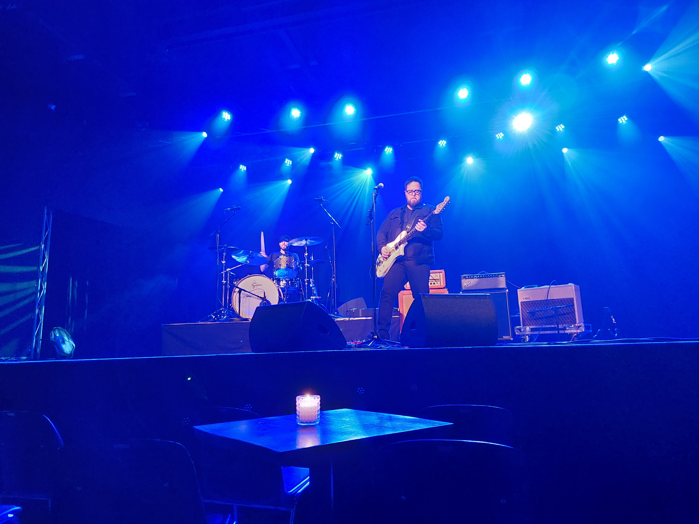

Koncertanmeldelse
The Cold Stares
Posten - Odense
Den amerikanske Blues Rock-duo The Cold Stares fik sparket følelserne i gang, med bedste manér, dog med en middelvarm opvarmning.
Before Fire
Aftenen startede ud med det københavnske 70’er inspirerede rock band, Before Fire. Before Fire er et forholdsvist nyt band, formeret i 2017, og det kunne mærkes. Man har set meget værre optrædener, men man kunne godt mærke at du unge drenge stadig mangler noget øvelse. Selve det musiske var meget godt, men kropsbevægelserne passede ikke energiniveauet i musikken. Men som opvarmningsband, gjorde de det de skulle, og fik sat godt gang i publikum.
The Cold Stares
Aftenens hovednummer, The Cold Stares, bestående af forsanger og guitarist Chris Tapp, og Brian Mullins på trommer, fra Evansville, Indiana, er et rockband der spiller klassisk blues rock, men med en tungere lyd.
Selvom de faktisk kun er 2 mand på scenen, kunne man godt have troet at de havde gemt 1 eller 2 mere om bag ved. The Cold Stares er et glimrende eksempel på at man ikke behøver 5-6 mand på scenen for at lave fantastisk rockmusik. Kun bevæbnet med en guitar og et trommesæt, formår bandet at sætte mange andre rockbands til skam.
Man kan mærke at der følelse i sangene. Frontmand Chris Tapp, nævner også før et nummer, at det er baseret på hans voldelige forhold med hans ekskone, Men selvom det er en tragisk historie, formår han alligevel at gøre det med smil.
Alt i alt formår The Cold Stares at skabe en fantastisk aften, og vi kan ikke gøre andet en anbefale dem, når de engang træder på dansk jord igen.